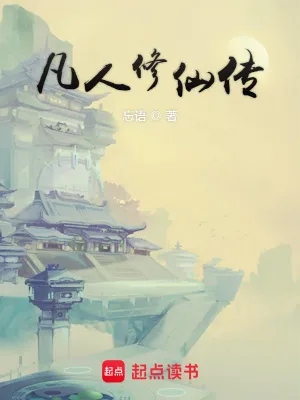
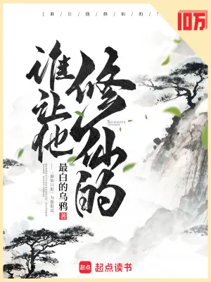
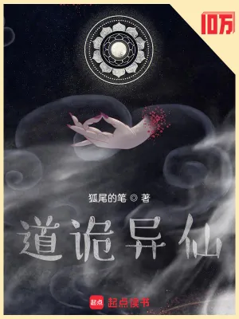

仙俠小說心得
仙俠是這裡心得最多的類型之一。這裡說的仙俠，是修仙、修真那一類：主角從凡人開始，靠功法、丹藥和機緣一路往上爬，最後追求長生或成仙。套路看起來都一樣，讀起來差很多。有《凡人修仙傳》那種步步為營的凡人流，有《誰讓他修仙的》這種把套路拿來吐槽的搞笑仙俠，也有《道詭異仙》這種分不清現實與瘋狂的詭異系。
挑書前先想自己要什麼：想看主角一路變強，選番茄的《莽荒紀》《星辰變》；想看人物和世界的厚度，選《赤心巡天》；想慢慢走、慢慢看，選《我本無意成仙》《爛柯棋緣》；想放鬆，就從搞笑系開始。下面每本都有評分和一句話短評，依上架日期排列。
第一次讀仙俠，先讀這三本

《凡人修仙傳》忘語 5修仙小說的教科書。想知道仙俠為什麼好看，從這本開始。
《誰讓他修仙的》最白的烏鴉 5最好入口的搞笑仙俠，不用記境界也看得懂，笑完還想追真相。
《道詭異仙》狐尾的筆 5看膩了套路就讀這本。分不清現實和瘋狂，近幾年最特別的修仙小說。全部仙俠小說心得
原來我是仙道天驕醋六香小說・仙俠在現代修仙社會裡，他只是一個植入人造靈根、讀煉丹職校的普通學生；穿越到古老修仙界，卻被所有人當成天靈根的絕世天驕。誤會流加兩界穿梭，輕鬆好笑，是今年起點最兇的新書之一。4★
玄鑒仙族季越人小說・仙俠主角是一面鏡子，真正在台前的是一整個李氏家族，一代一代往上爬、一代一代有人倒下。家族修仙的代表作，群像和伏筆的口碑都是頂級，門檻也很高。4.5★
沒錢修什麼仙？熊狼狗小說・仙俠把修仙寫成一場還不完的貸款：靈根用租的，功法要付費，連練體的藥都要分期。腦洞大、梗很密、諷刺很辣，好笑的同時也看得很累，喜歡和討厭的人都很激烈。4★
陣問長生觀虛小說・仙俠一個靈根很差的散修小孩，靠著識海裡一塊道碑和一手畫陣的本事，一步一步往上爬。這是一本把陣法當成真正學問來寫的仙俠，溫馨、紮實，也慢得驚人。4★
太歲priest小說・仙俠一個只想唱曲玩樂的紈絝少爺，被硬推上修仙的路，最後把整個仙界的規矩掀了。這本把蒸汽火車和修真放在同一個世界，講的是靈石被誰拿走、凡人為什麼活得那麼苦。很好笑，也非常虐，五顆星。5★
赤心巡天情何以甚小說・仙俠這是我心目中近幾年最好的仙俠小說。文筆好、人物有重量、世界大得驚人，伏筆埋得又深又遠。它寫了六年多、一千多萬字，這麼長的篇幅我讀到最後都沒有膩。五顆星。5★
莽荒紀我吃西紅柿小說・仙俠這是我很喜歡的一本番茄。主角紀寧是劍仙，從頭到尾就靠一把劍，路線很純粹。世界觀用了大量中國神話當底子，讀起來比他其他幾本更有仙俠味。套路是熟悉的番茄套路，可是我整本讀得非常順，五顆星。5★
星辰變我吃西紅柿小說・仙俠這是番茄最經典的一本，也是很多人修真小說的入門書。它把修真和宇宙放在一起寫，從一塊小小的大陸一路打到開天闢地，收尾收得乾淨。神界那一段我覺得沒有前面好看，所以給 4.5 顆星。4.5★
凡人修仙傳忘語小說・仙俠修仙小說的教科書。主角韓立資質普通、長相普通、出身普通，在一個人人殺人奪寶的修仙界，靠著謹慎和算計一步一步往上走。它定下了後來十幾年修仙文的規矩。人界篇是巔峰，後面的公式化我也看得出來，可是韓立這個人我一路跟到最後都沒膩，五顆星。5★
走進修仙吾道長不孤小說・仙俠設定派的夢幻逸品。這個世界的修仙界經歷過一場「科學革命」，功法背後是數學和物理，各大門派對應不同學科，歷代大能對應真實的科學家。主角是個有點瘋的理科生，穿越過去如魚得水。創意滿分，但廢話多、門檻高，所以我給 4 顆星。4★
大奉打更人賣報小郎君小說・仙俠前半本是我看過最好看的古代探案加修行小說，案子有趣、人物鮮活、對話好笑。主角許七安嘴賤又好色，卻在關鍵時刻很有擔當。後半本格局拉大，辦案變少、戰力膨脹，味道跟前面不太一樣，可是我還是看得很開心，五顆星。5★
大乘期才有逆襲系統最白的烏鴉小說・仙俠《誰讓他修仙的》作者的前一本書，一樣好笑，而且收得更完整。主角已經是天下第一，才等到一個把他當菜鳥的系統，整本書就靠這個錯位玩出各種花樣。後期偶爾有點說教，我給 4.5 顆星。4.5★
爛柯棋緣真費事小說・仙俠很有古意的一本仙俠。主角計緣不爭不搶，在人間到處走，隨手結下的緣分過了幾十年才開花結果。讀起來飄渺、安靜，跟主流的升級修仙完全是兩個味道。主角太順這件事爭議不小，我給 4.5 顆星。4.5★
我本無意成仙金色茉莉花小說・仙俠一本慢慢走、慢慢看的仙俠遊記。道士宋游帶著一隻會說話的三花貓下山，一路看山看水、遇妖遇人，沒有打臉也沒有升級壓力。文字乾淨，讀起來像在喝一壺熱茶。主線存在感偏弱，所以我給 4.5 顆星。4.5★
一世之尊愛潛水的烏賊小說・仙俠前半本是武俠，後半本是神話，中間靠輪迴任務一路串起來。主角孟奇愛裝又愛搞笑，戰鬥場面卻是我看過最帥的幾場之一。後期境界拉得太高，夥伴跟不上，所以我給 4.5 顆星。4.5★
道詭異仙狐尾的筆小說・仙俠近幾年最特別的一本修仙小說。主角分不清自己是住在精神病院的高中生，還是詭異世界裡被師父當藥引的道童，讀者也跟著他一起分不清。氛圍壓抑、畫面很重口，可是一翻開就停不下來。我給五顆星。5★
仙逆耳根小說・仙俠主角王林資質差、出身低，卻是我看過最狠也最能忍的修仙主角之一。中段的「化凡」好看到可以單獨拿出來推薦，後期等級越寫越快，收尾也趕，所以我給四顆星。4★
誰讓他修仙的最白的烏鴉小說・仙俠仙草等級的小說，主角用最認真的態度，做最離譜的事，故事線輕鬆有趣，笑完卻還想追問真相的仙俠小說。5★